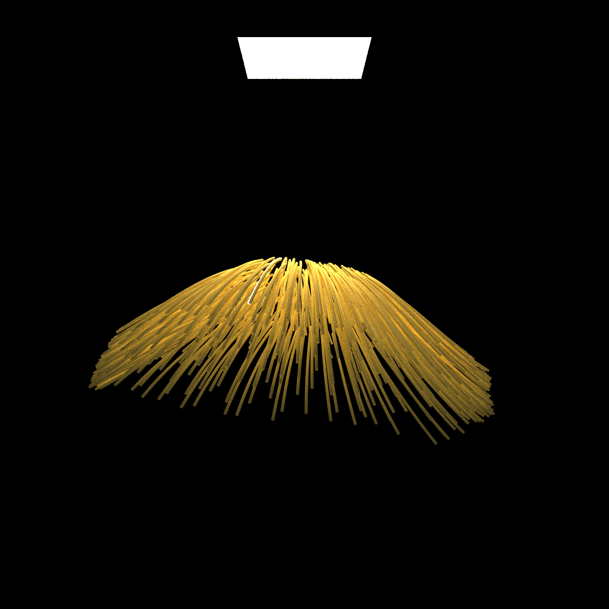

For my final project, I plan to implement a highly realistic, but reasonably fast, hair renderer. For any implementation decisions, I've decided to prioritize realism over speed.
For this project I hope to implement Steve Marschner's elliptical hair model, the most realistic hair model I have found for simulating the scattering effects of hair strands:
https://www.cs.cornell.edu/~pramook/papers/elliptical-hair.pdf
It builds on previous work by simulating not just the R, TT, and TRT reflective lobes of hair strands, but also the hair "glints" caused by the ellipical shape of most hair strands. However, if I find this model is too difficult to implement, I'll stick to just using Marschner's previous, simpler hair model.
If i have time, I also hope to implement the multiple scattering effects in hair (hopefully for some of that sweet, sweet extra credit). Unlike other materials, simulating the multiple scattering effects of light on hair is unreasonable due to the high number of bounces a light path has when traveling through hair. This has been popularly solved in real time rendering with tricks like deep opacity maps. However, to stick to the realistic goals of this implementation, I'll simulate the hair as a volume, like what is presented by pixar in this old paper (extrapolating the density of each cell using nearby guide hairs):
https://graphics.pixar.com/library/Hair/paper.pdf
or Unreal Engine currently on higher-end systems:
https://docs.unrealengine.com/en-US/Engine/HairRendering/Overview/index.html
To read in hair data, I decided to import data from the alembic file format. There is no open-standard file format that supports storing hair strands, but there is a bit of precedent in using the alembic file format, as maya allows exporting hair strands to it and Unreal Engine uses it for importing strand-based "grooms". To support using the alembic file format, I added a new "hair" command to the .test file format used in this class. The format is like so:
hair <filename.abc> <hair group>
Where filename.abc is the name of the alembic file in the same directory as the .test file and the hair group is the name of the group containing all hair strands in the alembic file. Maya exports the strands as b-splines, so I stuck to using those when rendering.
To test this, I used my masterful hair modelling skills to create a simple groom in Maya. I couldn't find any nicer xgen hair models online, but I'll keep trying. I intentionally kept the strand count low to start things off simple.

To check my importer I then rendered a simple scene with my hair, using a blonde diffuse material and slight ambient light.
